Nothing claimed in the original documents is taken as true. The “if it worked” views put a story into pictures; they do not correspond to any observed phenomenon. No experiment was run: everything here is reconstruction, calculation and simulation.
Four ways to explore
The simulator runs in the browser, nothing to install. Each card opens the matching mode directly.
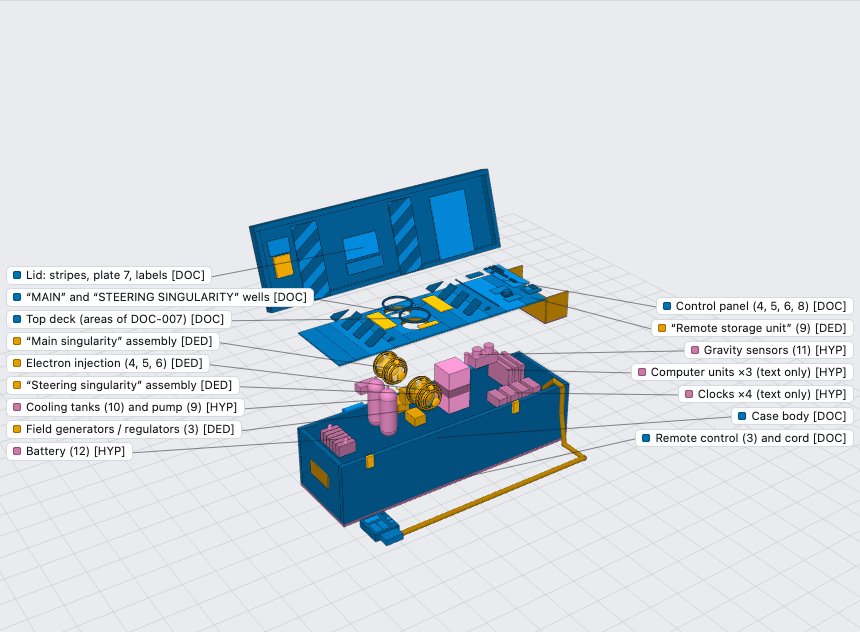
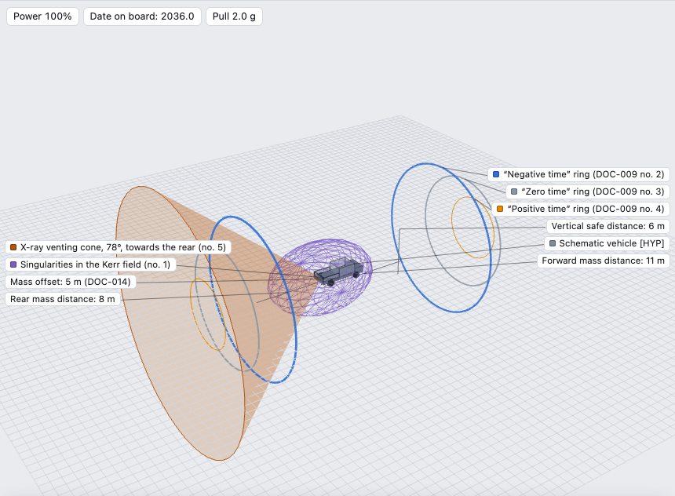
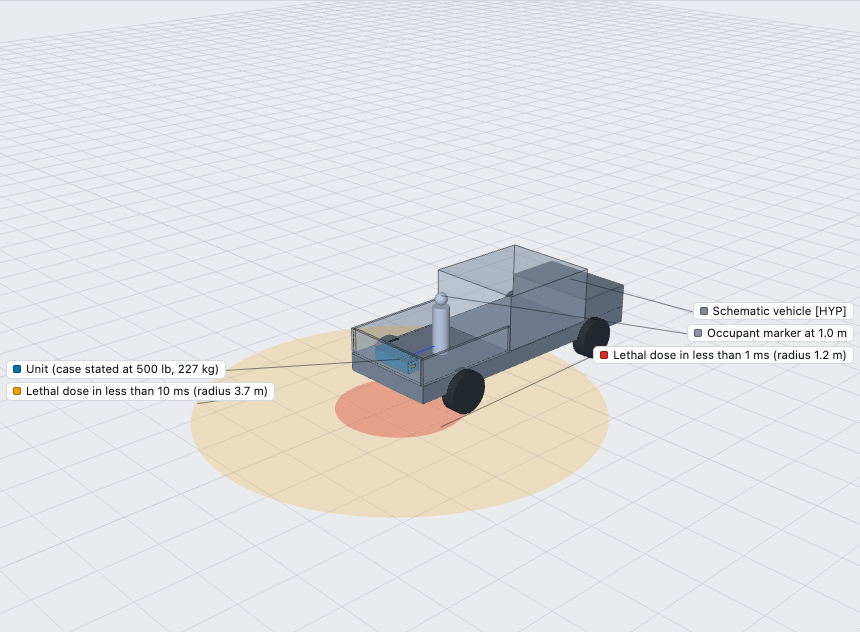
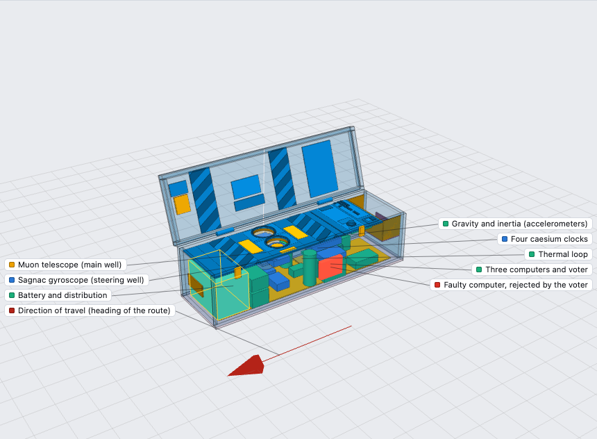
The numbers that don't add up
The story's own figures, taken literally and run through the calculations. Every value is recomputed by a script in the repository.
The exhibits
Six of the twenty-two inventoried documents. These are anonymous images circulated on forums in 2000–2001, reproduced here for analysis. Their provenance and hashes are in the inventory (in French).
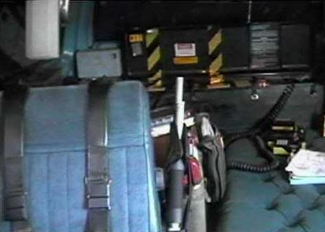
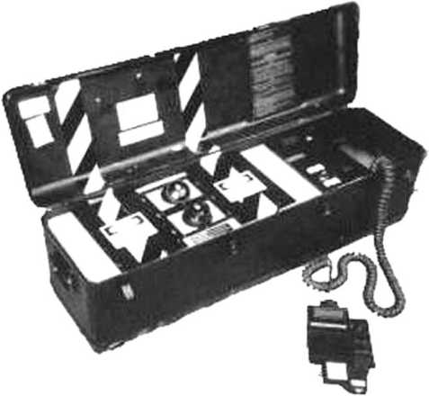
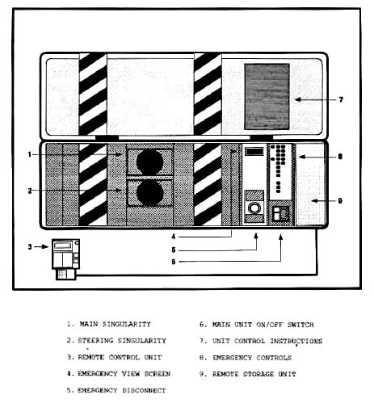
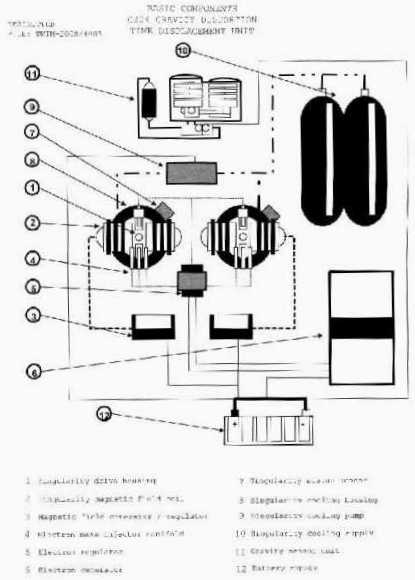
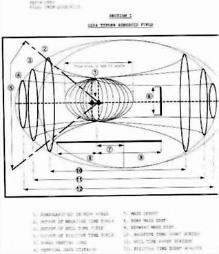
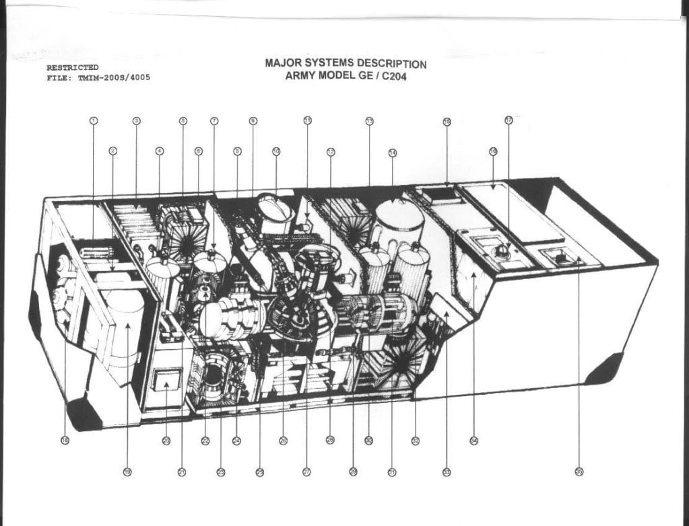
From document to model
Every part of the 3D model carries its level of evidence: read on a document, deduced, or assumed. Nothing is documented below the top plate, so the interior is a hypothesis, and the model says so.
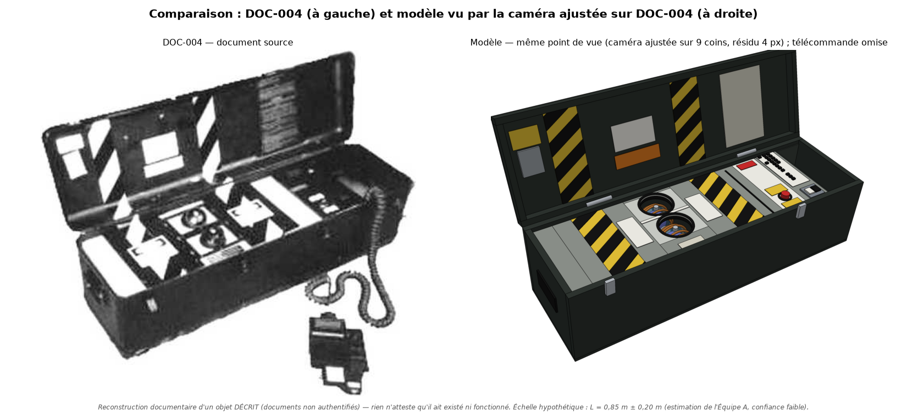
What can actually be built
Not a time machine: a measuring instrument in the same case. Costs and durations are estimates without quotes, and we have built none of it. Read the build guide (in French)
The full dossier
Twelve reports with their scripts and data. The reports are in French; a summary in English is linked first. Everything can be re-run from the repository.
Method and limits
How it was made. Eight specialised AI agent teams, driven with Claude Code: archives, theoretical physics, engineering, simulation, 3D model, experiments, recent literature, optimised machine. A ninth, the red team, had one job: tear the others' work apart.
What the red team found. 58 errors or overstated conclusions in our own dossier, all fixed. Each report ends with its correction log.
What is verified. The calculations re-run identically. 446 references were checked online, from their metadata and abstracts, not their full text.
What is not. No experiment was run and nothing was built. The simulations are illustrative. The scale of the case rests on assumed reference objects.
What we do not know. Who the author was, where the 35-callout cutaway comes from, and how the “bent laser” photo was made.
What we do not claim. Enthusiasts were already poring over these images in 2003. This dossier covers the whole path, from the archive to the simulator, and shows its sources.